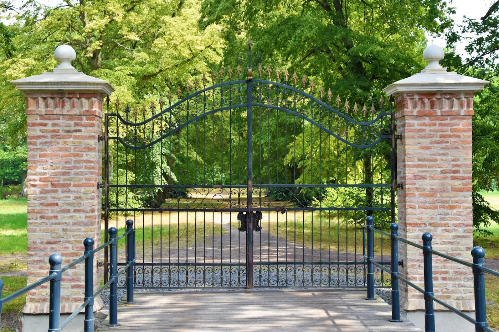
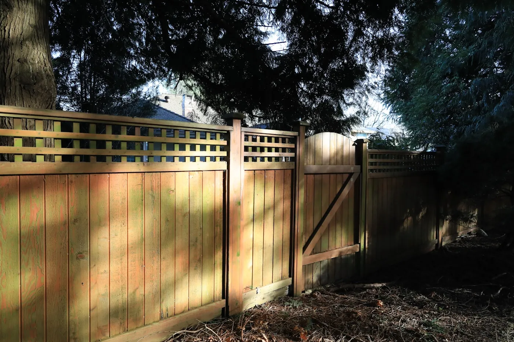
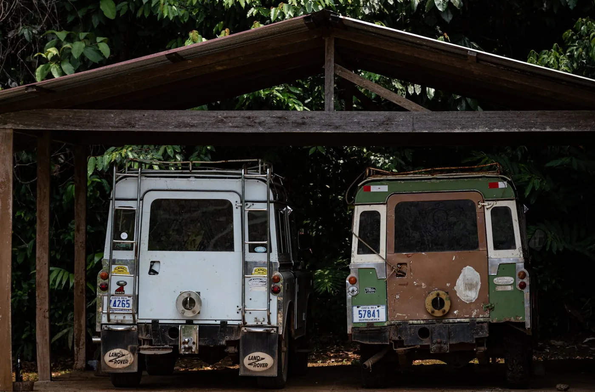

If we don't have it, we'll build it.
Custom gate fabrication and installation in Plano, Texas and surrounding areas. From basic designs to patterned iron gates, we fabricate anything you can design or draw.

Iron gates.
Add security and curb appeal in one move. Every gate is customized to your specifications and finished with a professional powder coat, so it keeps its looks through Texas summers.
Swing or slide, single or double, plain or patterned. Pair it with a gate operator and it opens from your car.

Wood gates.
Warm cedar looks, backed by steel. We build wood gates with reinforced steel frames and bar tops, so they stay square instead of sagging like an all-wood gate.
Wood and iron fences, built to match.
Fencing fabricated and installed by the same shop that builds your gate, so the whole property line looks like one piece of work.
Decorative designs we've built.
Patterned iron gates are our specialty. These horse-themed designs come straight from our shop portfolio, and we can cut yours from a sketch.
Farm & ranch fences.
Pipe and rail fencing for acreage, pastures, and ranch entries around Collin County. Built to keep livestock in and look right doing it.

Carports.
Covered parking fabricated to fit your driveway and your house, not a one-size kit. Ask us about matching it to your gate and fence.
Bring us a sketch. Leave with a gate.
Free estimates. Visit the showroom to see iron and wood work in person.